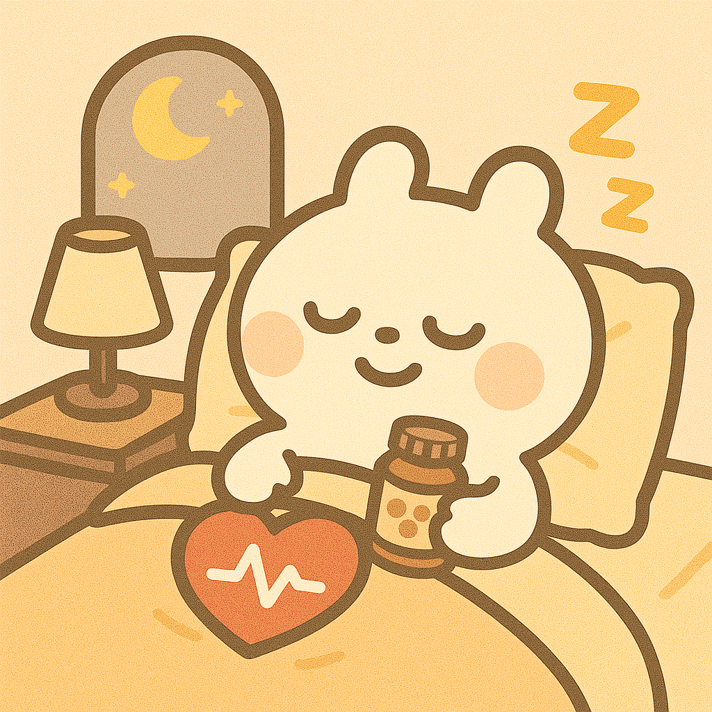

打造黃金睡眠力：3種營養素幫助你放鬆入眠
探索鎂、色胺酸與維生素B6如何幫助你改善睡眠品質，告別輾轉難眠。
睡眠知識
探索鎂、色胺酸與維生素B6如何幫助你改善睡眠品質，告別輾轉難眠。
長時間久坐、壓力大？了解上班族常見的心血管問題與日常保養方法。

了解如何透過日常營養補給和生活調整，提升免疫系統功能，減少感冒機會。
了解皮質醇與生理時鐘的關係，以及如何透過作息與飲食安排改善睡眠品質。

了解免疫系統的平衡之道，以及如何通過合適的營養與生活方式支持免疫健康。

了解如何通過生活調整與營養支持，幫助你緩解季節性過敏，穩定免疫系統。

解析有助於提升專注力與腦部健康的營養素，讓你學習、工作更有效率。


睡眠生理週期相關營養素
含Omega-3的營養素
植物性營養成分
腸道微生物相關營養素

小帕是資訊整理小幫手，不是醫師
我會整理營養知識和熱門資訊供你參考，但不提供醫療建議喔！
聯盟行銷關係揭露：本網站與iHerb等平台有聯盟行銷合作關係。當您透過本站連結購買產品時，我們會收到一定比例的佣金，這不會增加您的購買成本。我們承諾透明標示所有聯盟行銷連結，並保持內容的客觀性與公正性。
免責聲明：本網站提供的所有內容僅作為一般知識參考，不構成醫療建議。任何營養補充品都不能預防、診斷、治療或治癒任何疾病。使用者在考慮任何營養補充品前，應先諮詢專業醫療人員。NutriPal不對因網站內容而產生的任何損失或損害負責。所有健康決策應在專業醫療人員的指導下進行。